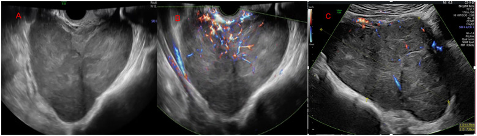
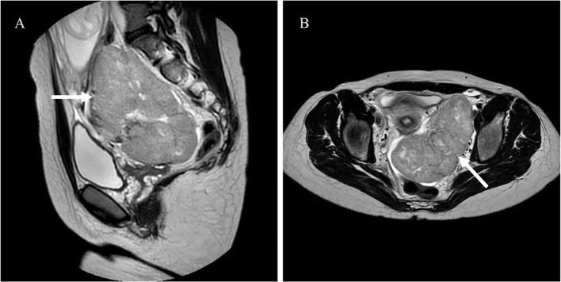

1630 — Khối phần phụ NGHI ÁC trong thai kỳ: O-RADS/IOTA, MRI không gadolinium và thời điểm mổ theo tuổi thai
Tags: pattern:khong-phan-phu pattern:u-buong-trung vung:phan-phu score:O-RADS score:IOTA protocol:MRI-thai-khong-gadolinium incidentaloma:khong
Mức chắc chắn (certainty): tổng hợp y văn (literature synthesis) — tổng quan có hệ thống về hình ảnh khối phần phụ trong thai (PMC13641726), 1 ca nguyên văn có ảnh siêu âm + MRI (PMC13462065) và 1 tổng quan điều trị ung thư trong thai (PMC13074105). Số nào chưa có nguồn đối chiếu ghi "chưa rõ".
1. Tổng quan bệnh học – cơ chế hình ảnh
- Tần suất: khối phần phụ gặp ở 0,2–8% thai kỳ (đa số nghiên cứu 1–2%, có loạt tới ~4%); ung thư buồng trứng chỉ 1/15.000–1/32.000 thai kỳ. Con số "ác tính cao" hay gặp trong y văn thực chất là thiên lệch tuyển chọn: ở trung tâm tuyến cuối, BOT + ác tính lên tới 31,9% số thai phụ được chuyển đến. Trong tổng quan 16 nghiên cứu (1.674 thai phụ, 1.660 tổn thương): 93,1% lành (1.284/1.379), 3,4% u giáp biên (BOT), 3,5% ác tính.
- Vì sao mang thai làm hình ảnh khó hơn — ba cơ chế cụ thể:
- Decidual hóa nội mạc tử cung lạc chỗ: nội tiết thai làm u lạc nội mạc tử cung (endometrioma) thoái triển mô đệm thành nhú mạch máu — gặp ở 11,8–39,5% endometrioma trong thai. Trên siêu âm, nhú mạch máu này bắt màu (color score 3) và trông y như BOT → đây là cái bẫy số một, và tổng quan ghi nhận 1 ca BOT bị chẩn đoán nhầm là deciduoma.
- Tăng sinh mô đệm kiểu luteoma / hyperreactio luteinalis: khối đặc, hai bên, rất nhiều mạch, do hCG cao (thai trứng, đa thai, IVF) — tự thoái triển sau sinh, cắt bỏ là sai lầm không hồi phục.
- Tử cung to chèn ép + thai nhi động: khó đánh giá vùng tiểu khung, đặc biệt sau 18 tuần (túi cùng Douglas bị tử cung chiếm chỗ).
- Vì sao mô học vẫn "giữ nguyên hình thái": BOT và ung thư biểu mô buồng trứng (EOC) trong thai giữ đặc điểm hình ảnh như ngoài thai — tổn thương lớn hơn, đa vách – đặc, mạch máu nhiều. Vì vậy nguyên tắc là áp dụng đúng từ vựng IOTA + O-RADS, chỉ hạ ngưỡng can thiệp ở nhóm nguy cơ.
- Ngưỡng định lượng bắt buộc nhớ (từ tổng quan có hệ thống):
- Phân biệt BOT với deciduoma: BOT lớn hơn nhiều — trung vị 88,0 mm vs 48,1 mm; BOT đa vách–đặc 30,0% vs 22,4%; 83,9% deciduoma có 1–3 nhú, trong khi 66,7% BOT có > 3 nhú; cả hai đều color score 3 ở đa số → số nhú và kích thước là hai biến số tách biệt, không phải "có mạch = ác".
- IOTA Simple Rules trong thai (n = 61): ngưỡng 1 đặc điểm ác cho Se 100% / Sp 51,0%; 3 đặc điểm → 91,7% / 53,1%; ngưỡng 30 → 91,7% / 73,5%; loại ca không kết luận → 87,5% / 94,4% (NPV 97,1%). Chiến lược hai bước IOTA và ADNEX cho Sp 70,0–90,2%, NPV 90,0–98,3%, nhưng hay gọi nhầm deciduoma là ác.
- Biến chứng cơ học: xoắn 1–28%, vỡ 0–9%, chèn cản trở sinh 2–17%; nguy cơ cao nhất với khối 6–8 cm và thai 10–17 tuần.
- Không có mô hình chẩn đoán nào được khuyến cáo riêng cho thai kỳ — O-RADS/IOTA dùng được nhưng chưa được thẩm định trên thai (tổng quan nói rõ "no diagnostic models recommended").
- Vì sao MRI không cản từ là lựa chọn bậc hai: MRI không bức xạ, T2W đặc cho thấy vách xơ (tín hiệu thấp), thành phần đặc, nhú; DWI/ADC giúp tách lành – ác (ADC lành cao hơn, b-value 0 và 800–1.000 s/mm²). Gadolinium không dùng thường quy vì thuốc qua nhau thai, gắn với bệnh lý viêm sơ sinh, thai lưu và tử vong sơ sinh trong dữ liệu quan sát → chỉ dùng khi thật cần và sau tư vấn.
2. Mẫu hình + chẩn đoán phân biệt theo vị trí (gamut)
- Mẫu hình A — nang đơn thuần, thành mỏng, < 5 cm, không vách/nhú: nang chức năng/simple cyst (39,0% tổn thương lành) → theo dõi, phần lớn tự hết.
- Mẫu hình B — nang "kính mờ" + 1–3 nhú mạch máu, 4–6 cm: endometrioma decidual hóa (T1 sáng, T2 shading trên MRI) — không mổ; BOT là chẩn đoán phân biệt khi > 8 cm, > 3 nhú.
- Mẫu hình C — đa vách – đặc, > 8 cm, nhú > 3, tưới máu mạnh: BOT hoặc EOC; ung thư biểu mô và di căn là nhóm ác hay gặp nhất.
- Mẫu hình D — khối đặc, phân thùy, tăng sinh mạch mạnh, thai phụ trẻ, LDH cao: u tế bào mầm (dysgerminoma hay gặp nhất); u tế bào mầm chỉ 1–2% ung thư buồng trứng nói chung nhưng chiếm tỷ lệ cao hơn trong ung thư buồng trứng liên quan thai, dysgerminoma ước tính 0,2–1/100.000 thai kỳ.
- Mẫu hình E — khối đặc hai bên, nhiều mạch, vàng da/nam hóa, hCG rất cao: luteoma / hyperreactio luteinalis — lành, thoái triển sau sinh.
- Mẫu hình F — nang có mỡ/bóng vôi trong: u quái trưởng thành (24,2% tổn thương lành) — nguy cơ xoắn là lý do mổ chính, không phải ác tính.
- Gamut theo tuổi thai: < 12 tuần** → nang hoàng thể, thai ngoài tử cung, u quái, dysgerminoma; **12–18 tuần** → cửa sổ mổ thuận lợi (tử cung còn nhỏ, túi cùng Douglas tiếp cận được); **> 18 tuần → khó tiếp cận, ưu tiên chẩn đoán – theo dõi, mổ sau sinh nếu không cấp cứu.
3. Bảng so sánh phân biệt (ma trận đối chiếu)
| Thực thể (entity) | Siêu âm / MRI điển hình | Chốt vào (rule-in) | Chốt loại (rule-out) | Gợi ý xác nhận |
|---|---|---|---|---|
| U giáp biên (BOT) | Nang đa vách – đặc, trung vị 88 mm, > 3 nhú (66,7%), color score 3, vách T2 tối | > 3 nhú + kích thước > 8 cm + đa vách – đặc + tăng sinh mạch | < 5 cm, 1–3 nhú, thành mỏng, không thành phần đặc → không nghĩ BOT | Chuyên gia siêu âm (EFSUMB III) + MRI; mô bệnh sau mổ |
| Ung thư biểu mô buồng trứng (EOC) | Khối đa vách – đặc hoặc đặc, bè đặc dày, cổ trướng, hạch, mạc nối | Thành phần đặc lớn + cổ trướng + hạch + CA-125 rất cao | Khối < 5 cm thuần nang, không cổ trướng → không nghĩ EOC | CT/MRI bụng–tiểu khung (không cản từ), MDT |
| Dysgerminoma / u tế bào mầm | Khối đặc, phân thùy, echo không đồng nhất, mạch mạnh (color 3–4); T2 trung gian, vách xơ tối | Thai phụ trẻ + LDH cao + khối đặc lớn + AFP/hCG (tùy loại) | Nang thuần, không thành phần đặc → không nghĩ u tế bào mầm | LDH, AFP, hCG; MRI; mô bệnh (có thể bảo tồn tử cung) |
| Endometrioma decidual hóa | Nang "kính mờ", 1–3 nhú mạch (83,9%), trung vị 48 mm; T1 sáng, T2 shading | Tiền sử endometrioma + kích thước nhỏ + 1–3 nhú + T1 sáng | > 8 cm, > 3 nhú, thành phần đặc lớn → không quy kết deciduoma | Siêu âm lặp lại sau sinh; tránh mổ khi không cấp cứu |
| Luteoma / hyperreactio luteinalis | Hai bên, đa nang–đặc, rất nhiều mạch, tử cung to; hCG rất cao | Hai bên + bối cảnh hCG cao (trứng trứng/đa thai/IVF) + nam hóa nhẹ | Một bên, khu trú, không bối cảnh hCG cao → không nghĩ luteoma | Theo dõi sau sinh (thoái triển), testosterone nếu nam hóa |
| U quái trưởng thành | Nang có mỡ, bóng vôi/răng, có thể có mức dịch–mỡ | Mỡ/bóng vôi trong nang = chốt u quái | Không có mỡ/vôi + thành phần đặc tăng sinh mạch → không phải u quái | CT/MRI xác nhận mỡ; mổ nếu > 6–8 cm vì nguy cơ xoắn |
| Nang đơn thuần / nang chức năng | Nang trong, thành mỏng < 3 mm, không vách/nhú, < 5 cm | Thuần nang + không nhú + không tăng sinh mạch | Có nhú/vách/đặc → không phải nang đơn thuần | Siêu âm lặp lại 8–12 tuần hoặc sau sinh |
4. Protocol chụp + phân độ
- Bước 1 — Siêu âm là tuyến đầu (không thay thế được): đầu dò transvaginal + transabdominal, mô tả theo từ vựng IOTA (vách, thành phần đặc, nhú, color score 1–4, bóng lưng, dịch trong túi cùng). Chuyên gia (EFSUMB level III) làm tăng độ chính xác — trong ca nguyên văn, chính siêu âm chuyên gia đã gọi đúng dysgerminoma trước mổ.
- Bước 2 — Phân độ O-RADS US (v2022) — nhớ 5 mức: 0 không đánh giá được; 1 buồng trứng bình thường; 2 gần như chắc lành (< 1%); 3 nguy cơ thấp (1% đến < 10%); 4 trung gian (10% đến < 50%); 5 nguy cơ cao (≥ 50%). Lưu ý: O-RADS chưa được thẩm định riêng cho thai, nên dùng để chuẩn hóa mô tả và mức khẩn, không dùng như "kết luận".
- Bước 3 — MRI khi siêu âm không kết luận hoặc nghi ác: 1,5T, KHÔNG gadolinium; các chuỗi tối thiểu: T2W (3 mặt phẳng, ưu tiên HASTE/SSFSE nhanh), T1W, T1W fat-sat, DWI b = 0 và 800–1.000 s/mm² + ADC. Đánh giá: vách/thành xơ T2 tối, thành phần đặc, nhú, ADC (lành cao hơn ác), dịch – máu – mỡ. Thai phụ nằm nghiêng trái nhẹ sau 20 tuần để tránh hội chứng chèn ép tĩnh mạch chủ.
- Bước 4 — Xét nghiệm: CA-125 tăng sinh lý trong thai nên không dùng đơn độc; LDH cho u tế bào mầm (ca nguyên văn 847 U/L, tham chiếu 135–214, trong khi CA-125 34,3 U/mL — bình thường); AFP/hCG cho u tế bào mầm không dysgerminoma; HE4/ROMA chưa thẩm định trong thai — chưa rõ.
- Bước 5 — Quyết định theo tuổi thai (ESGO/INCIP, qua tổng quan):
- Bệnh giai đoạn sớm: có thể mổ ở bất kỳ tuổi thai nào; thuận lợi nhất là tam cá nguyệt 2 (14–22 tuần).
- Sau 18 tuần: túi cùng Douglas thường không tiếp cận được → nếu mổ thì phải phân giai đoạn lại sau sinh.
- Bệnh tiến xa sau 18 tuần: sinh thiết + điều trị nội khoa (hóa trị tân bổ trợ) + vét hạch/ổ bụng sau sinh, thay vì mổ lớn khi đang mang thai.
- Hóa trị: chống chỉ định trong tam cá nguyệt 1; có thể bắt đầu sau 14 tuần (hết thời kỳ tạo cơ quan). Ca nguyên văn: hoãn hóa trị sau hội chẩn đa chuyên khoa, sinh tự nhiên 40 + 3 tuần, không tiến triển sau sinh.
- Cấp cứu thì khác hẳn: xoắn/vỡ/đau bụng cấp → mổ ngay bất kể tuổi thai, không chờ đánh giá hình ảnh đầy đủ; xoắn gặp 1–28%, nguy cơ cao với khối 6–8 cm ở 10–17 tuần.
flowchart TD
A[Phát hiện khối phần phụ khi mang thai] --> B[Siêu âm chuyên gia theo từ vựng IOTA]
B --> C{O-RADS 2-3 và không triệu chứng?}
C -->|Có| D[Theo dõi siêu âm 8-12 tuần hoặc sau sinh]
D --> E{Tự thoái triển?}
E -->|Có| F[Không can thiệp]
E -->|Không| G[Siêu âm lại - cân nhắc MRI không gadolinium]
C -->|Không| H[MRI 1,5T không cản từ - T2 DWI ADC]
H --> I{Đặc/đa vách - nhú > 3 hoặc > 8 cm?}
I -->|Không| D
I -->|Có| J[Hội chẩn sản - phụ khoa - ung thư]
J --> K{Tuổi thai và giai đoạn bệnh?}
K -->|Dưới 18 tuần - bệnh khu trú| L[Mổ bảo tồn trong tam cá nguyệt 2]
K -->|Trên 18 tuần - bệnh tiến xa| M[Sinh thiết + hóa trị sau 14 tuần + mổ sau sinh]
K -->|Xoắn - vỡ - đau cấp| N[Mổ cấp cứu ngay - không chờ]
L --> O[Theo dõi thai + phân giai đoạn đầy đủ sau sinh]
M --> O
N --> O
5. Biến thể bình thường và cạm bẫy
- Cạm bẫy 1 — gọi deciduoma là BOT: nang "kính mờ" với 1–3 nhú mạch là hình ảnh sinh lý của thai; cắt bỏ là mất buồng trứng oan. Tổng quan ghi nhận 1 ca BOT thật bị chẩn đoán nhầm thành deciduoma — nghĩa là sai theo cả hai chiều; cách an toàn: kích thước + số nhú + theo dõi sau sinh, không dựa vào "có mạch".
- Cạm bẫy 2 — cắt luteoma/hyperreactio luteinalis: khối hai bên, đặc, mạch nhiều trong bối cảnh hCG rất cao; đây là tăng sinh lành, tự thoái triển. Cắt bỏ → suy buồng trứng không hồi phục ở người trẻ.
- Cạm bẫy 3 — CA-125 dùng như dấu ấn ung thư: CA-125 tăng sinh lý trong thai; ca nguyên văn có CA-125 34,3 U/mL (bình thường) nhưng LDH 847 U/L mới là dấu hiệu gợi ý. Ở người trẻ có khối đặc, LDH/AFP/hCG quan trọng hơn CA-125.
- Cạm bẫy 4 — dùng gadolinium "cho rõ": không có chỉ định thường quy; dữ liệu quan sát gắn gadolinium với bệnh lý viêm sơ sinh, thai lưu. T2 + DWI/ADC đã đủ để phân độ nguy cơ trong hầu hết ca.
- Cạm bẫy 5 — mổ vì "khối to" mà bỏ qua tuổi thai: sau 18 tuần, túi cùng Douglas không tiếp cận được → mổ nửa vời rồi phải phân giai đoạn lại; hoặc mổ khi không cấp cứu làm tăng sinh non. Bệnh tiến xa sau 18 tuần: hóa trị tân bổ trợ + mổ sau sinh.
- Cạm bẫy 6 — bỏ sót xoắn vì "khối lành": 1–28% khối phần phụ trong thai xoắn; u quái 6–8 cm là điển hình. Đau bụng cấp + khối đã biết = mổ, không chờ siêu âm lặp lại.
- Biến thể bình thường: nang hoàng thể (corpus luteum cyst) đến ~16 tuần, thành mỏng, có thể có mạch viền — không được chọc/cắt; và dịch túi cùng lượng ít sinh lý.
- Lưu ý trung thực nguồn: các tỷ lệ 1–28% xoắn và 0,2–8% khối phần phụ là tổng hợp nhiều loạt khác nhau, không phải một đoàn hệ; không có RCT cho thời điểm mổ trong thai.
6. Tự lượng giá — Blind Quiz
Ca 1 — Thai phụ 21 tuổi, con so, thai 12 tuần 6 ngày, được chuyển khám vì phát hiện khối tiểu khung. Nhìn siêu âm, mô tả trước.

- Gợi ý lâm sàng: khối 11,79 × 7,3 cm, không đau, không ra máu; LDH 847 U/L (135–214), CA-125 34,3 U/mL (bình thường).
- Câu hỏi: Mô tả hình thái (thành phần, bờ, tưới máu)? Ba chẩn đoán phân biệt? Xét nghiệm nào đã "gợi ý đúng" trong ca này?
Bấm để hiện đáp án (findings + chẩn đoán)
- Dấu hiệu (findings): khối đặc, echo không đồng nhất, bờ phân thùy, đường viền ngoài nhẵn, tưới máu mạnh (color score 3–4) — hình thái nghi ác, hướng u tế bào mầm.
- Chẩn đoán (diagnosis): dysgerminoma buồng trái giai đoạn IIB (xâm lấn mạch – bao), mổ 15 + 6 tuần (nội soi cắt phần phụ + mở bụng nhỏ lấy bệnh phẩm); hóa trị được hoãn sau hội chẩn; sinh tự nhiên 40 + 3 tuần, không tiến triển sau sinh.
- Điểm mấu chốt: LDH 847 U/L là dấu hiệu sinh hóa gợi ý dysgerminoma, trong khi CA-125 hoàn toàn bình thường — đừng loại trừ ác tính vì CA-125 bình thường.
- Nguồn ảnh: Frontiers in Oncology 2026 (PMC13462065), Fig. 1, CC BY 4.0 — nguyên bản (giữ nhãn A–B).
Ca 2 — Cùng bệnh nhân: MRI tiểu khung trước mổ, không dùng gadolinium.

- Gợi ý lâm sàng: thai 13–14 tuần; siêu âm đã nghi u tế bào mầm.
- Câu hỏi: Trên T2W, dấu hiệu nào giúp khẳng định khối đặc thật (không phải nang xuất huyết)? Vì sao không dùng gadolinium? Chuỗi xung nào bắt buộc thêm?
Bấm để hiện đáp án (findings + chẩn đoán)
- Dấu hiệu (findings): (A) mặt phẳng dọc: khối đặc, tín hiệu T2 trung gian không đồng nhất, phân thùy, nằm sau–trên tử cung đang mang thai; (B) mặt phẳng ngang: khối đặc lớn ở phần phụ trái, vách/tổ chức xơ tín hiệu thấp, đẩy tử cung sang phải. Tín hiệu đặc trung gian trên T2 (không phải dịch) = thành phần tế bào thật.
- Vì sao không gadolinium: thuốc qua nhau thai, gắn với bệnh lý viêm sơ sinh/thai lưu trong dữ liệu quan sát; không cần để phân biệt đặc–nang.
- Chuỗi bắt buộc thêm: DWI b = 0/800–1.000 + ADC (ADC thấp → nghi ác), T1W fat-sat (máu/mỡ), và T2 ba mặt phẳng để đo kích thước – liên quan tử cung.
- Nguồn ảnh: Frontiers in Oncology 2026 (PMC13462065), Fig. 2, CC BY 4.0 — nguyên bản (giữ nhãn A–B).
Ca 3 — Thai 30 tuần, khối phần phụ 6,5 cm đã biết từ tam cá nguyệt 1, nay đau bụng dưới cấp, nôn. Siêu âm không thấy dòng chảy trong khối.
- Gợi ý lâm sàng: khối 6–8 cm, thai 10–17 tuần là cửa sổ nguy cơ cao nhất theo y văn; lần này thai đã 30 tuần.
- Câu hỏi: Chẩn đoán nghĩ đến? Có chờ MRI/đánh giá O-RADS đầy đủ không? Thái độ xử trí và điều gì quyết định đường mổ?
Bấm để hiện đáp án (findings + chẩn đoán)
- Chẩn đoán (diagnosis): xoắn phần phụ (adnexal torsion) — không có dòng chảy trong khối + đau cấp + nôn là bộ ba kinh điển; tỷ lệ xoắn chung 1–28%, nguy cơ cao nhất ở khối 6–8 cm và 10–17 tuần.
- Không chờ MRI/O-RADS: đây là cấp cứu ngoại khoa, mổ ngay để cứu buồng trứng; thời gian thiếu máu cơ quan quyết định khả năng bảo tồn.
- Đường mổ: nội soi được ưu tiên ở mọi tam cá nguyệt khi điều kiện cho phép; sau 18 tuần cần tính đến tử cung to và túi cùng Douglas khó tiếp cận — chọn cổng vào cao hơn, cân nhắc mở bụng nhỏ nếu cần.
- Sau mổ: tiếp tục theo dõi thai, không dùng thuốc giảm đau gây co tử cung, và phân giai đoạn đầy đủ sau sinh nếu mô bệnh là BOT/ác tính.
- Không có ảnh riêng cho ca này (ca dựng từ số liệu tổng quan); ảnh minh họa xoắn xem bài 583/530.
Bài liên quan chéo
- 583 – Nang lạc nội mạc tử cung trong thai kỳ — nền tảng decidual hóa & cạm bẫy nhú mạch
- 530 – Buồng trứng: O-RADS trên siêu âm & MRI — phân độ nang lành, từ vựng IOTA
- 537 – U buồng trứng giáp biên — hình thái nhú, kích thước và theo dõi
- 1606 – Tái phát endometrioma: mổ lại hay IVF — bối cảnh bảo tồn buồng trứng
- 552 – Chửa ngoài tử cung ở sẹo mổ lấy thai — phân biệt khối tiểu khung sớm
- 1610 – Tách màng ối sau can thiệp bào thai — bối cảnh can thiệp trong thai
Không dùng để chẩn đoán độc lập khi chưa có người hướng dẫn.